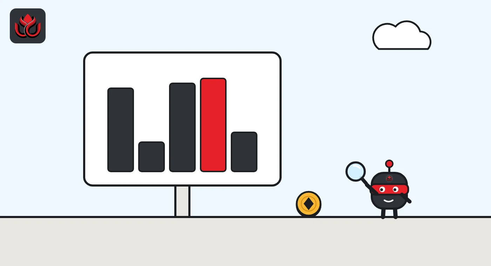
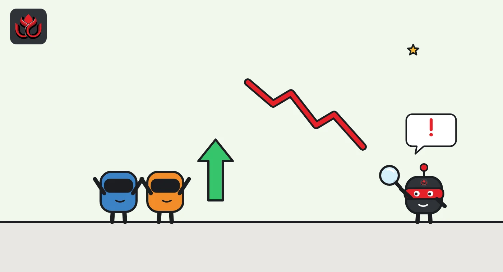

Hyperliquid's big traders flipped from 4.2x long to net short, then swung back to 86% long
In mid-October, traders tracked by DeepSea dumped their bullish bets and piled into ETH and BTC shorts worth more than $200 million apiece. Two weeks later they were leaning long again, even as prices kept sliding.
Key points
- DeepSea's tracked Hyperliquid traders went from 4.2 times more long than short (October 5 to 11) to 0.6 times (October 12 to 18).
- The biggest moves were ETH and BTC shorts above $200 million each at 5x leverage, opened on October 8, 9, 14, 15 and 18.
- Late on November 1 (ET), DeepSea showed 86% of tracked positions long, while CoinGecko had ETH about 15% and BTC about 9% below where they started October 5.
 What DeepSea's data shows
What DeepSea's data shows
All positioning figures in this article are DeepSea's own data on open Hyperliquid positions held by traders it tracks. They are not the whole Hyperliquid market. In the week of October 5 to 11, DeepSea's weekly report showed those traders holding $2.33 billion of longs against $560.93 million of shorts, a ratio of 4.2 to 1, with 123 of 167 coins leaning long.
One week later the picture had turned over. DeepSea's report for October 12 to 18 showed $1.57 billion long against $2.56 billion short, a ratio of 0.6. DeepSea's coin chart for that week shows shorts outweighing longs in BTC, ETH and HYPE. The largest single moves that week were ETH shorts of $262.09 million and $256.91 million and BTC shorts of $227.51 million and $227.07 million, all at 5x leverage.
By late November 1 (ET), the crowd had swung back. DeepSea's live long/short page showed an 86% long share: $3.35 billion long against $543.87 million short across 150 assets.

Data: DeepSea (desea.io), checked November 1, 2026, 11:25 p.m. ET.
How the flip happened
In the space of one October week, the big traders DeepSea follows on Hyperliquid went from firmly bullish to net short. Hyperliquid is a crypto exchange on its own blockchain, best known for perpetual futures, or perps: bets on a coin's price with no expiry date, usually made with borrowed money (leverage). A long wins if the price rises. A short wins if it falls.
In the first week, DeepSea counted 352 traders with 1,838 open positions and $345.84 million of unrealized profit. Even then, the biggest accounts were turning. Net long exposure to ETH fell by $837.43 million that week, and DeepSea logged a tracked trader opening a $276.72 million ETH short and a $230.95 million BTC short on October 9. A day earlier, a wallet DeepSea labels SM6e36 opened a $220.71 million ETH short and a $203.47 million BTC short.
The following week, DeepSea's data showed the whole group tipping into net short territory. Net long exposure fell by $630.08 million in HYPE, Hyperliquid's own token, by $605.31 million in ETH and by $561.52 million in BTC. The same SM6e36 wallet opened another $220.64 million ETH short and a $206.94 million BTC short on October 14.
Lopsided books, falling prices
DeepSea's coin-by-coin chart for the week to October 18 shows how lopsided the bigger books were. Bitcoin shorts were slightly larger than bitcoin longs. Ether shorts were more than double ether longs, and HYPE shorts about three times HYPE longs. The report shows these as bars, not exact figures.
Market prices moved the way the shorts were betting. On CoinGecko, ether was $2,726 at the start of October 5, $2,400 at the start of October 18 and about $2,301 early on November 2 (UTC), a fall of about 15%. Bitcoin went from $86,490 to $81,408 and then about $78,480, down about 9%. HYPE traded at about $88.10 on November 2.
Tracked Hyperliquid traders: long vs short
US$ billion
Source: DeepSea October 5 to 11 and October 12 to 18 reports, live long/short page (checked November 1, 2026, 11:19 p.m. ET).

Timeline
Wallet SM6e36 opens a $220.71 million ETH short and a $203.47 million BTC short at 5x (DeepSea)
A tracked trader opens a $276.72 million ETH short and a $230.95 million BTC short at 5x (DeepSea)
Week closes with tracked traders at a 4.2x long/short ratio
SM6e36 opens a $220.64 million ETH short and a $206.94 million BTC short (DeepSea)
ETH short of $262.09 million and BTC short of $227.51 million opened (DeepSea)
ETH short of $256.91 million and BTC short of $227.07 million opened; week closes at 0.6x
DeepSea live page shows 86% long share, $3.35 billion long
Back to long, but not like for like
Late on November 1 (ET), DeepSea's live page showed the crowd leaning long again: ETH longs of $1.12 billion against $74.86 million of shorts, BTC longs of $679.40 million against $172.48 million, and HYPE longs of $546.93 million against $119.35 million. DeepSea's "smart bias" reading showed 123 of 150 assets leaning long. Positioning was still shrinking at the margin, with net change of minus $97.22 million in BTC and minus $33.39 million in ETH.
Be careful comparing these snapshots. DeepSea's weekly report says its perp data covers tracked Hyperliquid traders, while the live page does not name its venue. The tracked group also grew: 352 traders in the first week and 816 in the second, with open positions rising from 1,838 to 3,922. A change in the ratio can come from new wallets joining the sample, not only from the same traders changing their minds.
One more quirk: the giant shorts appear in similar sizes week after week, around $220 million and $260 million in ETH. DeepSea logs each one as opened, but does not say whether these are new bets or the same positions closed and reopened.

The liquidation risk
Leverage cuts both ways. In the week to October 11, DeepSea found 12 large positions worth $114.76 million within 10% of their liquidation price, the point where the exchange closes a losing bet by force. A week later that number had grown to 49 positions worth $191.61 million, including BTC longs at up to 40x leverage. DeepSea logged 30 liquidations in the first week and 23 in the second among its tracked traders.
LC Insight analysis
This section is our reading of the facts above, not a statement of fact.
- We think the mid-October flip says more about a few very large accounts than about the crowd. When single 5x shorts of more than $200 million can swing a group's ratio, the headline number is a measure of whale bets, not of general mood.
- The swing back to 86% long while prices kept falling looks like traders buying the dip. If prices slide further, the likely result is more forced selling from those longs, which is the risk DeepSea's liquidation table points to.
- Because DeepSea's sample changed size between weeks, we read the ratios as direction signals, not precise measurements.
What's next
- DeepSea's next weekly report, which will cover the period of the October 29 Binance breach
- Whether the ETH long pile of more than $1 billion shrinks if ether stays near $2,300
- Further large 5x shorts from the SM6e36 wallet
Disclaimer. This article is based on public information and the sources listed below as of the update time shown. It is for information only and is not investment, legal or tax advice. Figures may change as companies and authorities publish new data.
Sources
- DeepSea, Weekly Smart Money & Global Money Flows Report, October 5 to 11 2026
- DeepSea, Weekly Smart Money & Global Money Flows Report, October 12 to 18 2026
- DeepSea, Perps long/short (checked November 1, 2026, 11:25 p.m. ET)
- CoinGecko, Ethereum historical data
- CoinGecko, Bitcoin historical data
- CoinGecko, Hyperliquid (HYPE)